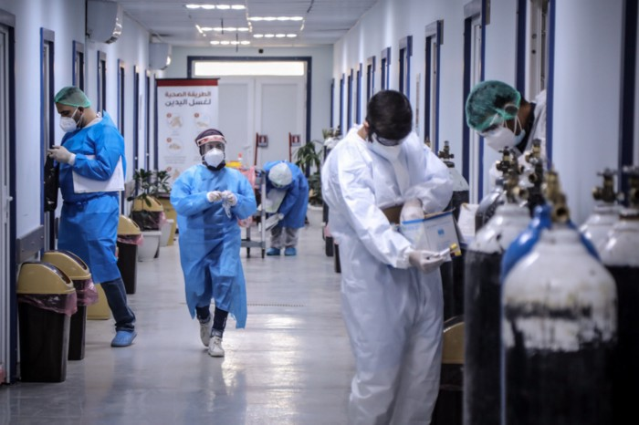

COVID-19 EN KARBALA: LOS ROSTROS DE LA RESPUESTA DE PRIMERA LÍNEA
Junto con el desempleo ya alto, el impacto de la pandemia en la estabilidad social y económica de Iraq es crítico.
Junto con el desempleo ya alto, el impacto de la pandemia en la estabilidad social y económica de Iraq es crítico.
Muchos pequeños operadores de embarcaciones turísticas han perdido sus puestos de trabajo. Una reciente evaluación del impacto socioeconómico de la pandemia en Koh Tao, realizada por el Proyecto de Iniciativa de Financiamiento de la Biodiversidad del PNUD, revela que la COVID-19 ha tenido un impacto drástico en las pequeñas y medianas empresas, así como en las trabajadoras migrantes. También indica que el 90% de los operadores de embarcaciones han perdido sus trabajos.
Crear seguridad alimentaria y luchar contra el cambio climático.
Mientras surge una pandemia la red de Laboratorios de Aceleración del PNUD cumple un año de hacer las preguntas correctas.
A medida que los bloqueos, los toques de queda y las interrupciones del transporte impiden que muchas personas vulnerables accedan a los servicios de salud, las comunidades están tomando la iniciativa. Los trabajadores y voluntarios de salud garantizan que sus pares, amigos y vecinos estén protegidos de las enfermedades.
Cómo utilizar las redes sociales para ayudar a los grupos vulnerables a acceder a servicios de VIH durante la pandemia de COVID-19
En asociación con el Ministerio de Desarrollo Agrícola y Seguridad Alimentaria de Botswana y el Consejo de Organizaciones No Gubernamentales de Ngamiland (NCONGO, por su siglas en inglés), los agricultores de la zona de Maun han recibido equipos como redes de sombra, pozos y tanques de agua para desarrollar sus negocios y cultivar más alimentos para los mercados locales.
Una mirada hacia las formas en que la tecnología puede abordar los numerosos desafíos de una pandemia mundial.
Durante generaciones, el árbol de pequi ha tenido un profundo significado cultural para el pueblo Kisêdjê. Y más recientemente también les ha salvado la vida.